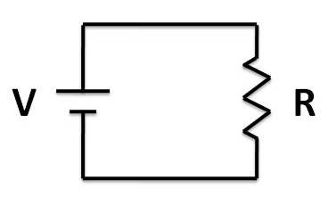

il principio dei vasi comunicanti è l'analogia per la corrente elettrica, in un circuito elettrico.

La corrente idraulica è il movimento di un fluido lungo u8n flusso d'acqua o all'interno di un condotto.

Un generatore di tensione è un dispositivo elettrico che mantiene una differenza di potenziale costante tra i suoi due terminali (poli), indipendentemente dalla corrente che lo attraversa.
